One app. Two community experiences.
This guide covers the Community Events Australia and Community Businesses Australia modules on Android and iPhone. Some management tools appear only for owners, Admins or Super Admins.
Choose an experience and sign in
Community Connect Australia is the main app. Choose Community Events or Business Directory when the app opens. You can switch between them at any time using the selector beneath the Community Connect header.
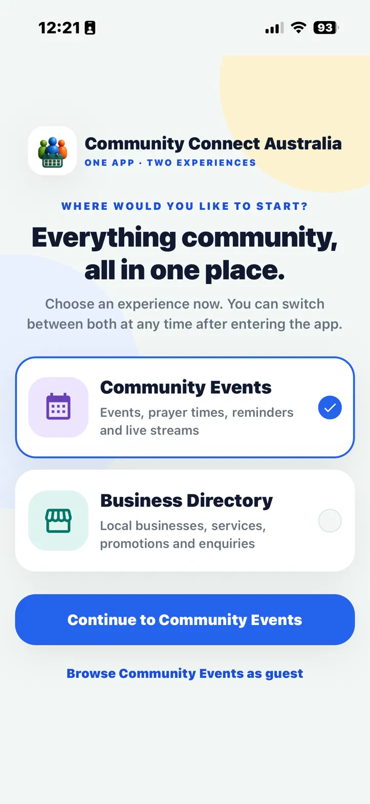
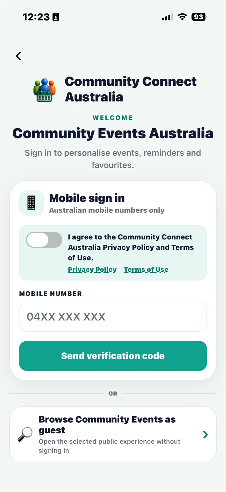
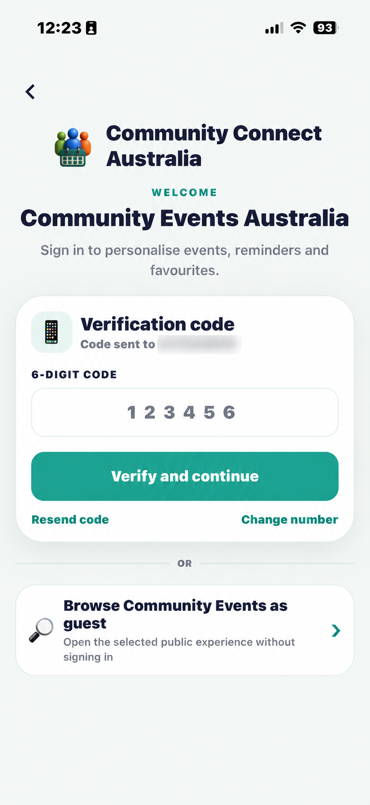
Guest access
You can browse public information without signing in. Guest access intentionally limits private event addresses, host contact details, maps and actions that require an account.
Find upcoming events
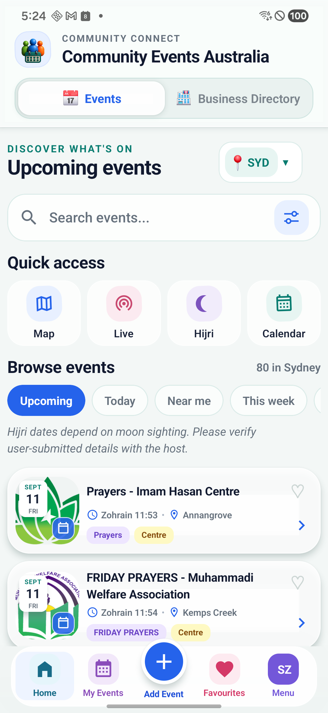
Search, city and Quick access
Select a city or search by event, host, centre, suburb, speaker or keyword. Quick access opens Map, public Live streams, Hijri Calendar and Calendar. The horizontally scrollable Browse events row includes Upcoming, Today, Near me and other predefined filters.
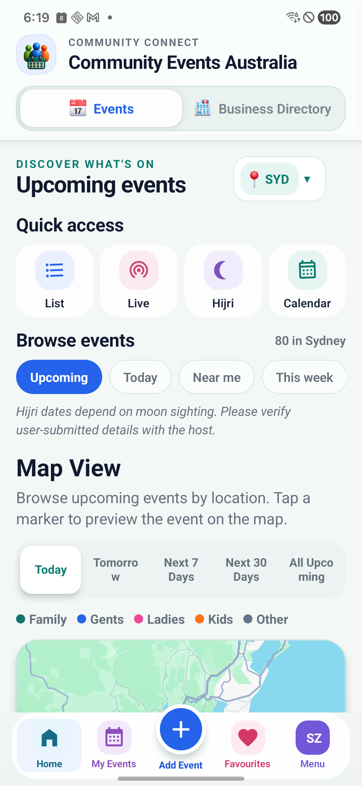
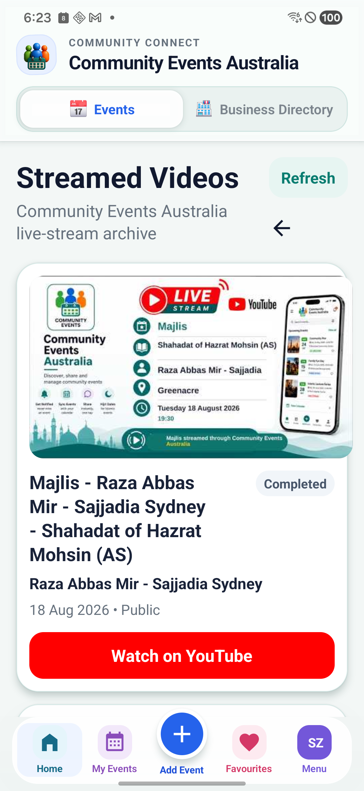
Near me
Near me asks for location permission when needed and orders eligible events by distance. You can decline and continue using city and text search.
Filters and LIVE
The filter button opens additional criteria without taking over the Home screen. The Live indicator is platform-wide—not city-specific—and opens the Streamed Videos page where public live broadcasts can be watched on YouTube.
Open details and take action
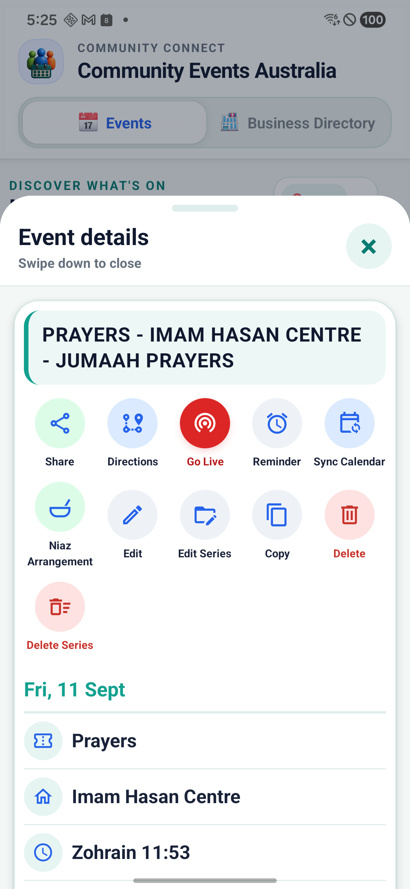
Tap a collapsed card or its arrow to open the event drawer. Details can include Gregorian and Hijri dates, time, host or centre, audience, suburb/address, speaker, reciters, notes and poster.
- Share: share with a poster, share text only, or copy text.
- Directions: open the eligible address in Maps.
- Reminder: schedule or manage a local event reminder.
- Sync Calendar: add the event to a supported calendar.
- Favourite: save it for faster access.
Swipe the drawer down to close it, or use X. Owner and administrator actions appear according to permissions; ordinary users do not see edit/delete controls for another person’s event.
Add a single or recurring event
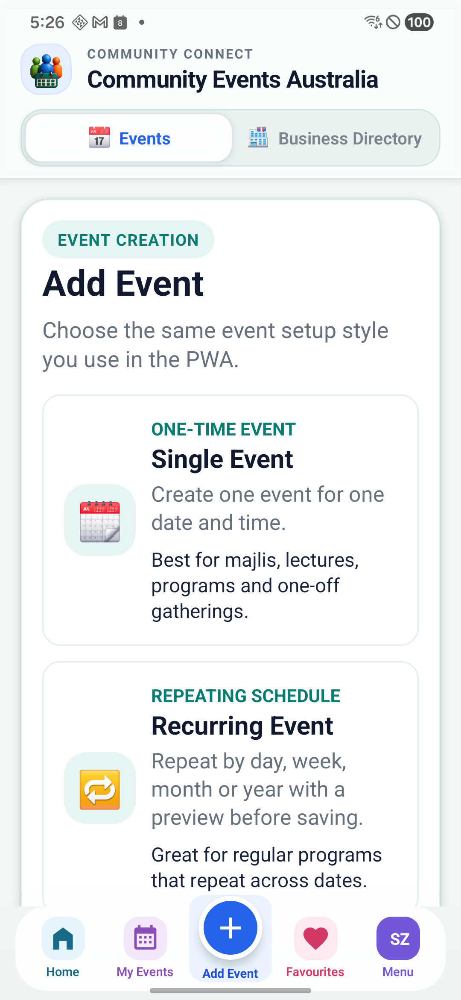
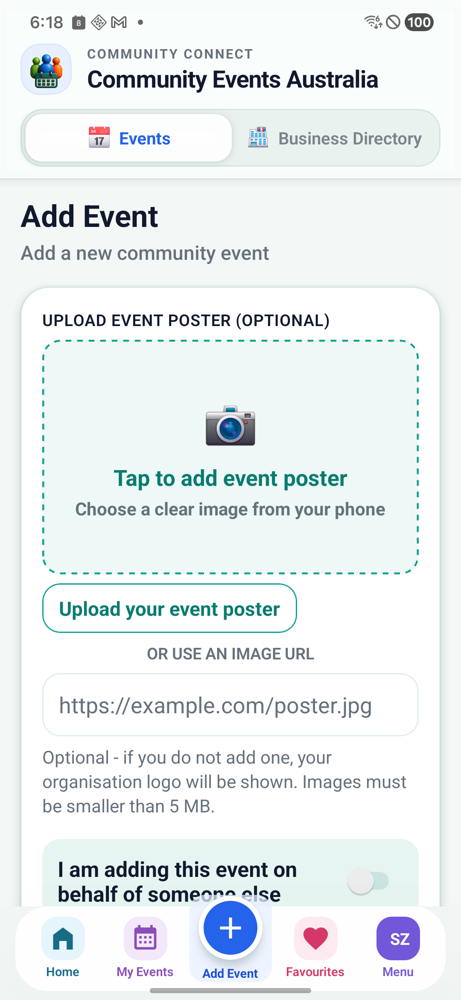
- Tap Add Event.
- Choose Single Event, or Recurring Event if your role permits it.
- Select event type, organiser/host and audience.
- Choose a Gregorian or Hijri date, then fixed time or a supported prayer time.
- Select an address from Google suggestions so directions, map placement and prayer-time calculation work correctly.
- Add optional details, speaker/reciters, notes and poster, then review and submit.
My Events contains events you own. Depending on the event and your role, you can edit, copy, share, hide/archive, manage a recurring series or request deletion. Historical records may be retained in a restricted archive.
Hijri calendar, calendar sync and reminders
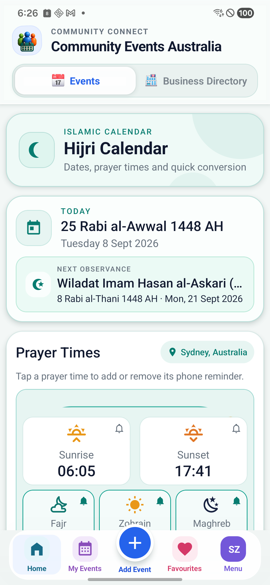
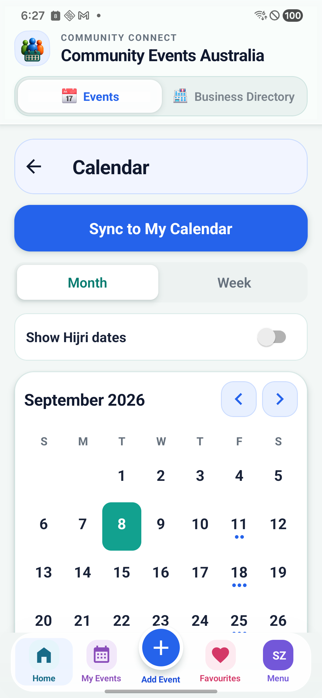
- Hijri Calendar: view Islamic dates and key community dates. Hijri dates depend on moon sighting and should be verified.
- Calendar: browse events by date and use supported calendar subscription or event sync actions.
- Reminder: schedule a local alert for an event. Phone notification permissions must be enabled.
- Notifications: review app alerts and manage available preferences from Menu.
Stream an event or watch a public broadcast
Eligible event owners and administrators can open an event, choose Go Live, select Public or link-only/private visibility, choose orientation and stream from the phone camera. They can also associate a valid YouTube Live URL created on another device.
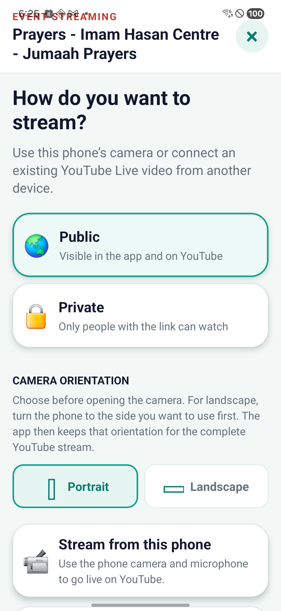
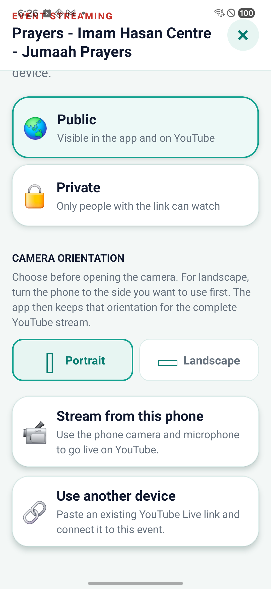
While streaming
- Keep the app open while the connection is being prepared.
- Use Camera, Mute and End controls. Tap the screen if controls have auto-hidden.
- On supported Android devices, use the down arrow or Home gesture for Picture in Picture. The same stream should continue while PiP is active.
- Only End Stream followed by confirmation should close the broadcast. Do not repeatedly press End while the closing screen is displayed.
Public live events appear in the Streamed Videos page and open on YouTube. YouTube may need time to process the recording after a stream ends.
Discover local businesses
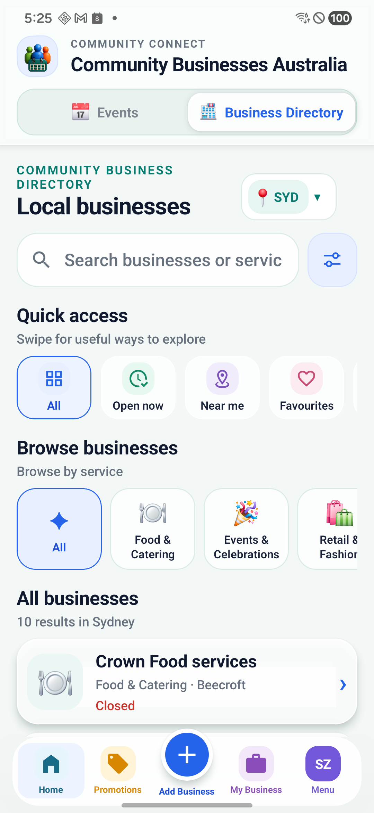
Search by business, service or location, then use:
- Quick access: All, Open now, Near me, Favourites, Recently added and other available shortcuts. Swipe horizontally to reveal more.
- Browse businesses: choose a colourful service category, then a subcategory where available. A business without a logo uses its category icon so businesses in the same category remain recognisable.
- Business details: view description, service categories, address, hours, active promotions and available Call, WhatsApp, Directions, Website or social actions.
Near me requests location permission and sorts eligible businesses closest first. “Recently added” refers to newly published listings, not ordinary amendments to an older listing.
Add and manage a business
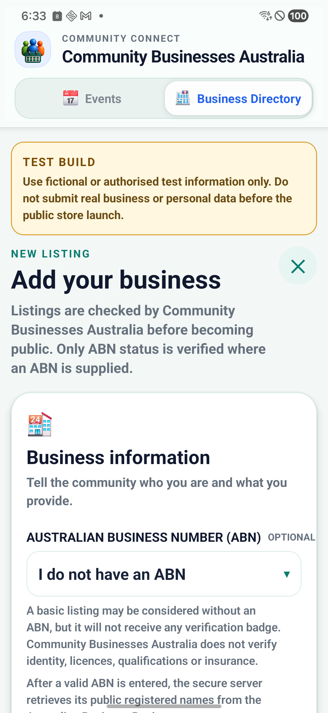
- Open Business Directory and tap Add Business.
- Enter the business identity, category/subcategories, service area or public storefront address, contact methods, opening hours and images.
- Complete any declaration and optional ABN details, then submit for review.
- Use My Business to follow Draft, Pending, Changes Required, Approved, Archived or Deleted status and submit corrections.
- Create promotions from the Promotions/My Business tools when available; promotions may also require approval and have an expiry date.
An ABN Verified badge only confirms the recorded ABN status/name check. It is not an endorsement or verification of ownership, licences, insurance, price or service quality.
Diagnostics and support
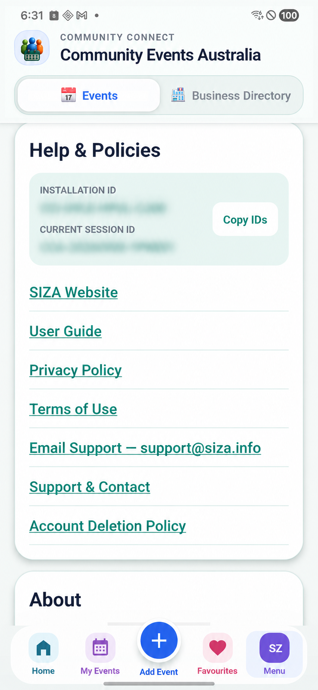
Open Menu → Help & Policies to find the Diagnostic Session ID for the current installation/session. When reporting a crash, streaming problem, failed business action or other error, copy that ID and include:
- what you were trying to do;
- the approximate date and time;
- Android or iPhone model;
- the app version/build shown in About; and
- a screenshot where safe.
Administrators can use the Diagnostics Register to locate privacy-filtered technical events associated with the supplied ID. Diagnostics are designed to avoid stream keys, passwords and verification codes.
Admin and Super Admin tools
The dashboard presents modules and statistics according to role. Tools can include users, events, organisations, imports/exports, repairs, settings, business approvals, promotions, archive access, diagnostics and messaging.
- Admins: perform delegated moderation and management for permitted modules.
- Super Admins: can access restricted controls, archived records, user role/ban workflows and higher-risk lifecycle actions.
- Archive-first records: event and business deletion actions remove public visibility while retaining the historical record. A previously archived/deleted business resubmitted later is flagged for eligibility review.
Privacy, safety and official documents
- Guest access limits private event addresses and host contact details.
- Location is requested in context for Near me; city browsing remains available without it.
- Business owners should not publish a private home address unless it is intentionally a public storefront address.
- Events, business listings, dates, hours, streams and promotions are user submitted. Verify important information with the host or business.
- Archiving/deletion can remove public access while restricted audit/history records remain available to authorised Super Admins.